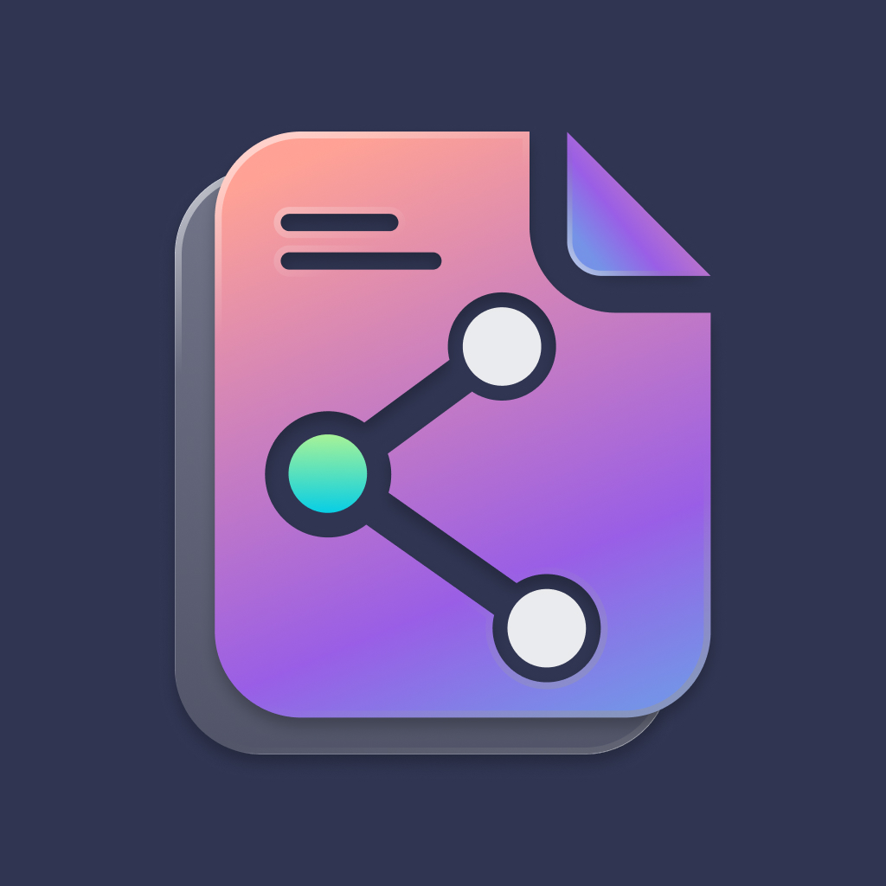
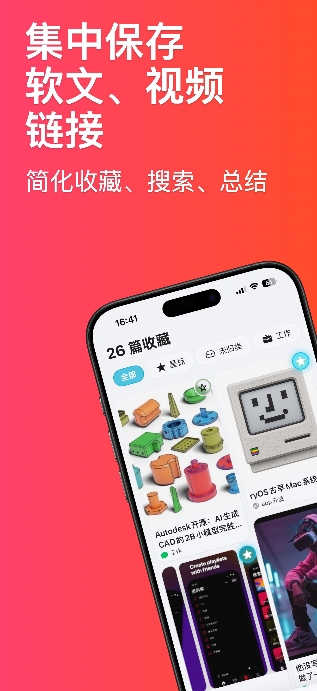
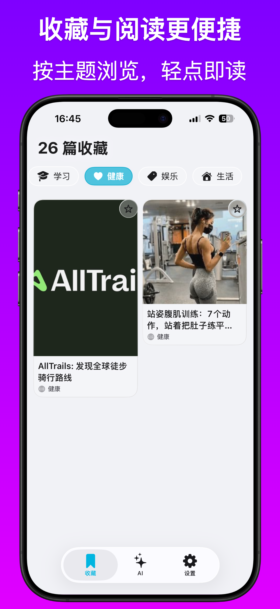
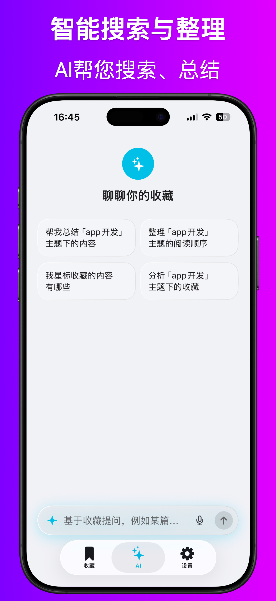
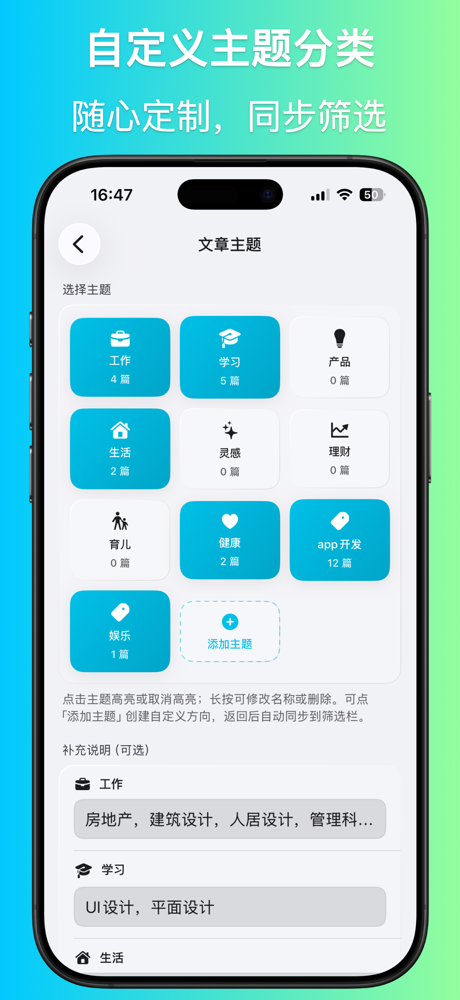
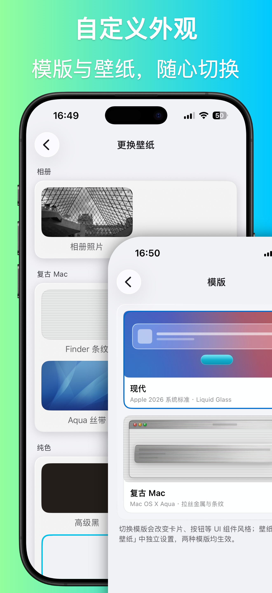
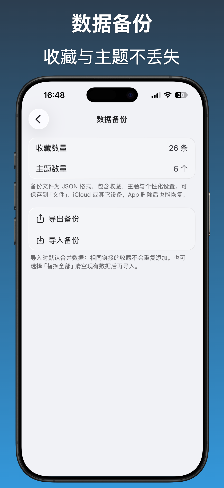

MooNotes聚合先收藏、后遗忘 → 随时找得到、说得清
面向 iOS / macOS 的智能聚合收藏 App。把散落在微信、小红书、知乎、B 站等平台的文章、视频与链接集中保存，并用 AI 自动整理、检索与对话，让收藏真正变成可用的知识库。

你是否有这些烦恼？
MooNotes聚合 为你量身解决
MooNotes聚合：智能收藏，AI 赋能，跨平台一站搞定。
把散落各平台的内容收进一处，用 AI 帮你整理、搜索与总结。让每一次收藏都有迹可循、随时可用。
MooNotes聚合 · 真实体验
从集中保存到 AI 对话，完整覆盖智能收藏工作流
集中保存文章、视频与链接
把散落在各平台的软文、视频、网页链接收进一处。瀑布流卡片带缩略图预览，顶部可按「全部 / 星标 / 未归类 / 主题」快速筛选，告别收藏夹里一堆打不开的链接。

跨平台内容展示
微信文章、小红书笔记、知乎回答、B 站视频……来源不同，展示统一。自动识别平台与内容类型，每条收藏带上主题标签，一眼看清这条内容属于哪块知识。

收藏与阅读更便捷
按学习、健康、娱乐、生活等主题图标切换浏览，轻点卡片即可 App 内打开原文阅读。收藏、AI、设置三 Tab 布局，从存到读路径清晰。

智能搜索与整理
切换到 AI Tab，和你的全部收藏对话。智能推荐提问示例，输入自然语言即可搜索、总结，需要深入时 AI 会自动抓取原文作答。

自定义主题分类
工作、学习、产品、生活、健康、娱乐……勾选启用、添加自定义主题、长按重命名或删除。可为每个主题填写补充说明，帮助 AI 更准确分类。

自定义外观
「现代」采用 iOS 26 Liquid Glass 磨砂玻璃，「复古 Mac」还原 Mac OS X Aqua 拉丝金属与 pinstripe 条纹。壁纸可独立选择，模版与壁纸任意组合，立即生效。

数据备份
导出 JSON 备份，包含收藏、主题、个性化设置及已缓存的文章正文。可保存到「文件」、iCloud 或其它设备，换机、重装甚至删除 App 后也能恢复。
MooNotes聚合 · 核心亮点
智能收藏 + AI 对话 + 跨平台统一，三位一体
多种添加方式
- 系统分享：在任意 App 中「分享 → MooNotes聚合」，返回主 App 后自动入库
- 剪贴板检测：复制链接后打开 App，弹出提示一键添加
- 手动添加：填写标题、链接、备注等信息
- 自动识别微信、小红书、抖音、B 站、微博、知乎、X、YouTube 等平台
丰富元数据
- 主题分类、来源、内容类型、阅读状态（未读 / 已整理 / 可复用）
- 「一句话价值」：记录当时觉得有用的原因
- 「关联项目」：标记这条收藏服务于哪个具体项目
- 星标收藏、补充备注，瀑布流卡片布局（单列 / 双列混排）
AI 能力
- 简单请求优先使用 Apple Intelligence 端侧处理；复杂请求通过内置 DeepSeek 完成
- 首次使用 AI 前须明确同意数据处理说明
- 添加后自动整理：生成「一句话价值」、匹配主题、推断关联项目
- 收藏对话：基于筛选后的收藏快速回答概览、查找、总结类问题
- 深入某篇时自动抓取原文（最多 1～3 篇），支持对比阅读
- 语音输入提问、朗读回复，金币不足时自动降级为本地关键词搜索
外观定制
- 现代：iOS 26 Liquid Glass 磨砂玻璃、圆角卡片与青色强调色
- 复古 Mac：Mac OS X Aqua 风格——拉丝金属、pinstripe 条纹、橙色凝胶按钮
- 壁纸：相册自定义、复古 Mac 预设、纯色与渐变多组内置预设
- 切换后自动调整文字与卡片对比度，保证可读性
文章主题管理
- 首次打开引导选择关注方向，可填写补充说明
- 设置 → 文章主题：勾选启用、添加自定义主题、重命名或删除
- 返回后自动同步到收藏页筛选与 AI 自动分类可选主题
- 参考你对主题的纠正记录，逐步提升分类准确度
数据备份
- 设置 → 数据备份：导出 / 导入 JSON 备份
- 备份包含收藏、主题、个性化设置及已缓存的文章正文
- 导入支持合并（相同链接不重复）或替换全部
- 可保存到「文件」、iCloud 或其它设备，App 删除后也能恢复
典型使用流程
从收藏到回顾，五步搞定知识管理
分享或复制链接
在任意 App 中分享至 MooNotes，或复制链接后打开 App 一键添加
自动识别与整理
自动识别平台与内容类型，AI 生成主题标签与「一句话价值」
按主题浏览筛选
顶部筛选栏按全部、星标、未归类或各主题快速定位
AI 对话搜索总结
切换到 AI Tab，用自然语言提问，基于全部收藏对话与总结
JSON 备份保障
定期导出备份，换机重装也能完整恢复收藏与主题
适用场景
无论你是内容消费者还是知识工作者，MooNotes 都能帮你
"以前微信、小红书、B 站的收藏分散在各处，找一篇旧文章要翻好几个 App。现在全部收进 MooNotes，AI 还能帮我总结「最近收藏的产品设计文章」，真正变成了可用的知识库。"—— 某独立开发者
立即体验 MooNotes聚合
MooNotes聚合 已上架 iOS / macOS。下载后即可使用基础收藏与浏览；在 AI 标签页同意相关说明后，即可体验智能整理与收藏对话功能。
让 MooNotes聚合 帮你把「先收藏、后遗忘」变成「随时找得到、说得清」。